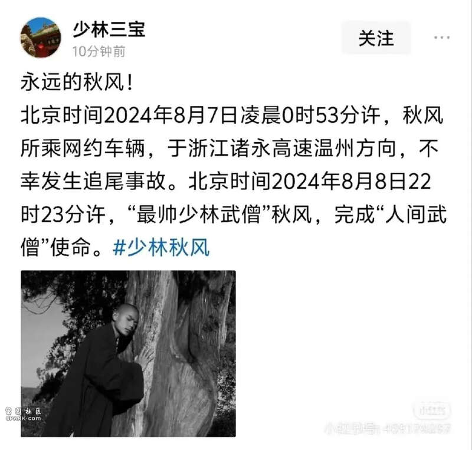

8月9日凌晨，小红书账号“少林三宝”发布了一则令人痛心的帖子《永远的秋风》，宣布了一个令武术界和社会各界深感悲痛的消息。据该帖文称，北京时间2024年8月7日凌晨0时53分许，少林寺第三十四代武僧、被誉为“最帅少林武僧”的秋风，在乘坐网约车行驶于浙江诸永高速温州方向时，不幸遭遇追尾事故。经过全力救治，秋风于北京时间8月8日22时23分许，永远地离开了，完成了他在人间的“武僧”使命。

秋风，法名延珩，以其深厚的武术功底、卓越的表演才华和独特的个人魅力，在社交媒体上迅速走红，赢得了广大网友的喜爱与尊敬。他不仅是一位技艺高超的武僧，更是一位致力于传承和弘扬少林文化的使者。2024年，秋风还参演了电视剧《赴山海》，在剧中饰演角色，进一步展现了他的多面才华。
事故发生后，少林寺及社会各界纷纷表达了对秋风的哀悼之情。少林寺内部人士及多位知情人士证实了这一不幸消息，并表示秋风的离世对少林寺及少林文化的传承都是巨大的损失。
据报道，当时秋风所乘坐的网约车上只有司机和秋风两人，车辆追尾大货车，网约车司机当场死亡。目前秋风的遗体正在送往老家途中。
Advertisements